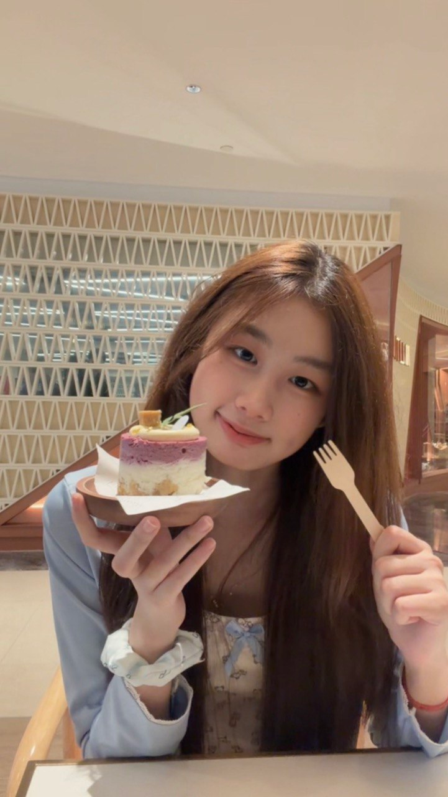
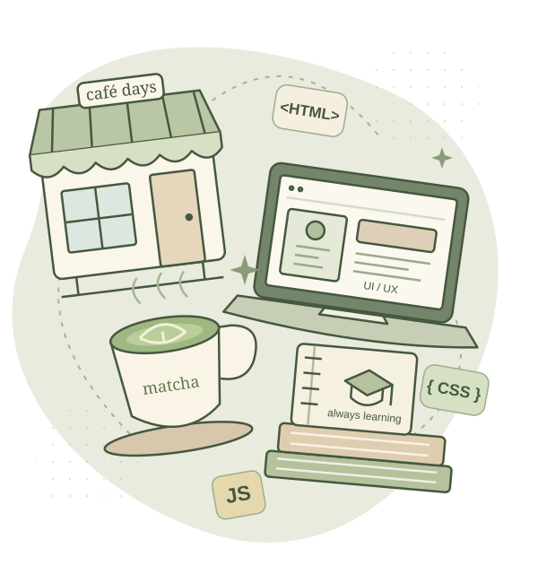

MATCHA
A little matcha break
Different cups, same favourite. I’m always happy to make time for matcha.


1 / 5
I’m pursuing a Diploma in Computer Science at Singapore Polytechnic, with a strong interest in UI/UX design and front-end development. I enjoy turning ideas into clear, thoughtful interfaces and bringing them to life through code.
My coursework includes Figma wireframes and clickable prototypes, Photoshop designs, and websites built with HTML, CSS and JavaScript. I’m looking for a one-year internship from March 2027 where I can contribute, learn from a team and grow as a designer.
Explore my work
A collection of coursework, prototypes
and experiments in making things work.
Three projects spanning interface design, development and visual storytelling.
More coursework, creative studies and early explorations.

A matcha lover, café hopper and someone who’s always looking forward to the next trip.
Outside class, I love finding cosy cafés, trying a new matcha and travelling overseas. I enjoy discovering new places and taking photos of the little moments along the way. You’ll find some of those memories in the gallery below.
I also train with SP’s Table Tennis Club and Darts Club. Balancing school, training and part-time work has taught me to manage my time and work with different people. In my customer-facing jobs, I’ve learned to listen carefully, explain things clearly and stay attentive when it gets busy.
Figma · Adobe Photoshop
Wireframing · Visual layout · Typography
HTML · CSS · JavaScript · Bootstrap
Node.js · Express · SQLite
A summary of my education, projects and experience.
Opens as a PDF in a new tab. You can save a copy from the PDF viewer.
I train with SP’s Table Tennis Club and Darts Club. In secondary school, I served as Consumer and Finance Club chairperson in 2023 and coordinated tasks for a notice-board competition entry that won first place. I also performed with my school band at the 2019 Perak state-level National Day parade.
Languages: Mandarin (native), English (fluent), Malay (fluent).
Matcha stops, café corners
and somewhere new to explore.
A few moments from outside class and away from my screen. Use the arrows to browse, or open a photo for a closer look.
Different cups, same favourite. I’m always happy to make time for matcha.
Cosy corners, sweet treats and a table full of things to try.
City walks, green escapes and good food along the way.